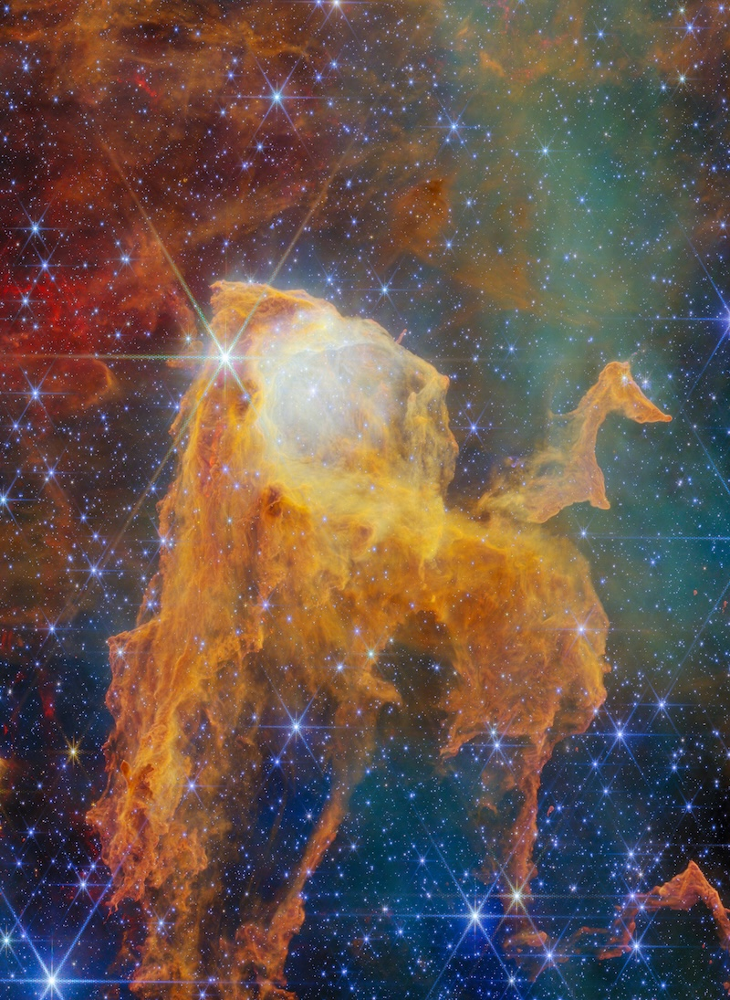
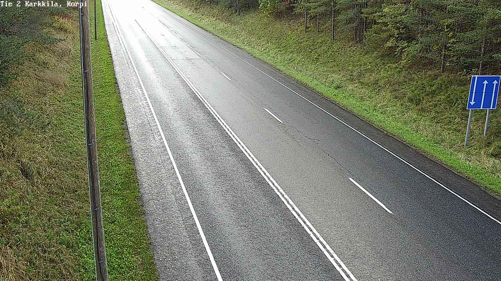
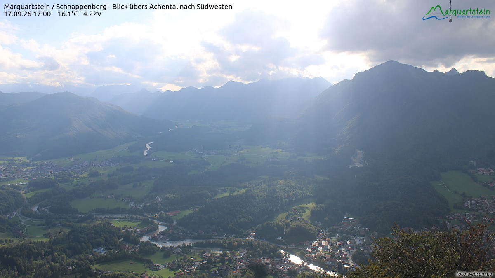
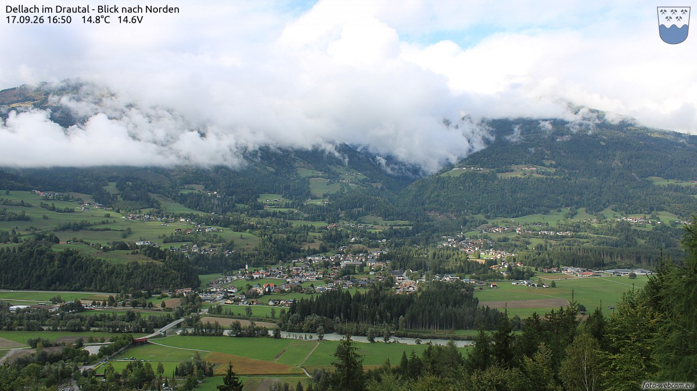
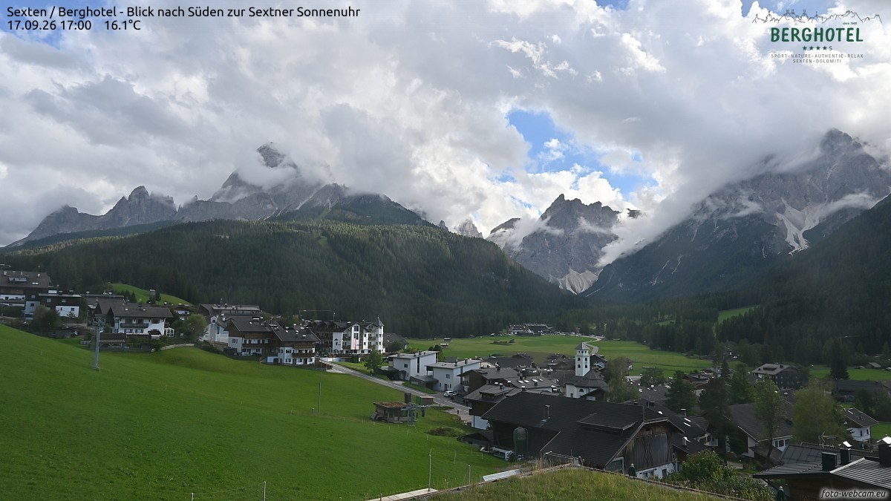
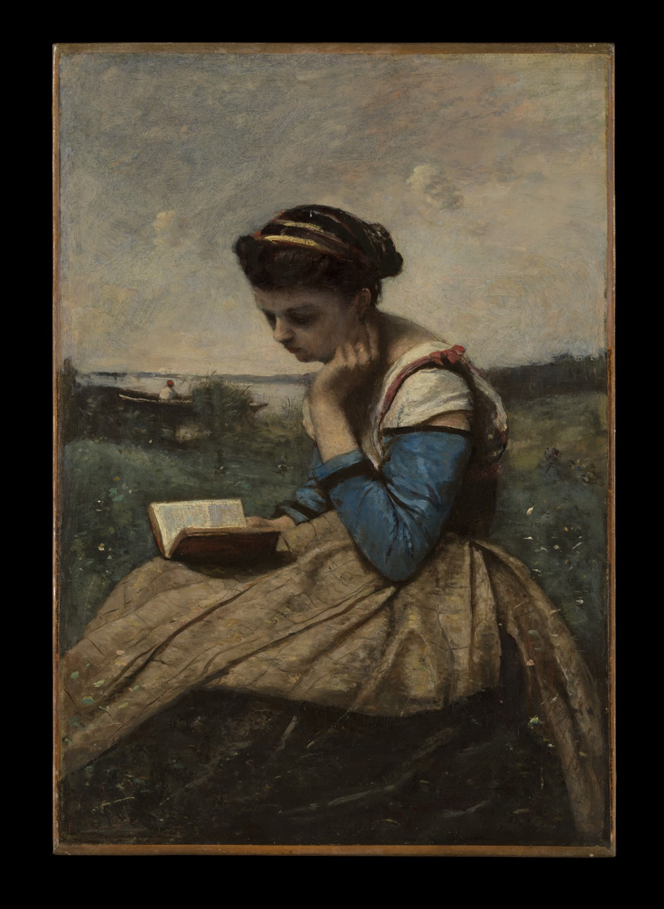
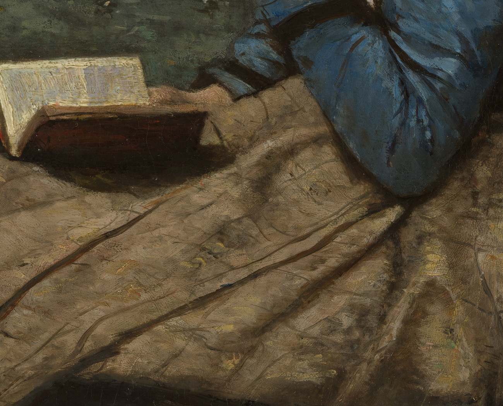

两家馆、一家社——巷历翻到第十三夜，卷尾只剩两页；天欲雪，巷子先把小火炉生起来。

七千五百光年外，船底座星云里立着一只「宝箱」：一根致密的气体尘埃柱，被邻近恒星的风与辐射雕出微微开启的箱盖——邻居里就有著名的海山二，一个比五百万个太阳还亮的恒星系统。掀开箱盖往里看，韦布的镜头数出约七十颗恒星挤在柱内，整个星团只有一百三十万岁——按恒星的标准，这是一群还没上小学的孩子，其中已经有一颗攒下了十九个太阳的质量。宇宙最贵重的宝物，原来一直是同一样东西：新亮的灯。今晚本地：蛾眉月月龄约六天半，亮面约两成半——明晚就是上弦，月亮的「宝箱」也快装满四分之一了。
今晚的四扇窗开在四种黄昏里：铸铁小镇的空路、云隙光下的河谷、云雾封山的德拉瓦谷，和日晷峰下的草谷。每扇窗下配一句话，都是刚截下来的此刻。

卡基拉，17:59。铸铁小镇的傍晚，公路空得像刚扫过。逆光把路肩的秋草照成一排金色，松林在另一侧站岗。这座小镇靠炼铁过了三百年，如今铁炉歇了，路还在替它赶路。

阿兴谷，17:00。云开了一道缝，光就顺着缝倒进谷里：蒂尔兴河在绿谷里拐了三道弯，把小镇绕在怀里。巴伐利亚的黄昏从不着急——它先给山打光，再给水打光，最后才轮到屋顶。

德拉瓦谷，16:50。云雾把半座山拦腰缠住，谷底的小镇不动声色：教堂的尖顶从云脚下面探出来，像给这座被云围住的山谷留了一根天线。14.8 度——山里的秋天，是从云的高度开始算的。

塞克斯滕，17:00。草谷尽头立着一排叫「日晷」的峰——五座钟乳石般的岩塔从西到东排开，太阳走到哪座，山脚下的人就知道到了哪个时辰。此刻云把日晷的刻度擦掉了一半，傍晚就只好凭感觉过。
9 月 17 日。素材：Wikimedia「On this day」。
今晚请出卡米耶·柯罗（Camille Corot），《读书的女子》（A Woman Reading），1869–1870 年，布面油画，大都会艺术博物馆藏。画一位坐在湖畔草地上读书的人——全画最亮的，是她面前摊开的那本书。

先看整幅：灰云把湖畔的天压得很轻，草地、远水和一只搁浅的小船都收在暗调里——只有书页是亮的。女子坐在画面正中，头微微向书那边偏过去，手肘支着膝盖，整个人摆成了字母「C」的形状，而书是这个字母的圆心。柯罗画了一辈子风景，晚年却反复画读书的人：风景是给眼睛的，读书是给心里的——他把两样都装进了这一幅。

把眼睛凑到那本书：书页只用了两三笔白，笔锋一带就翻出了厚度；深色的书壳斜斜压出一片影子，影子落在裙摆上，像给这一页安了底座。裙子的赭色用大笔横扫，蓝袖厚涂凸起——远处云天的笔触松得几乎要散掉，越靠近书，笔越稳。夜班也是同一门手艺：世界的笔可以松，灯下的那一行字，必须稳。
老方法：随机一个维基词条起步，跟着「诶？」走满七步。今晚的随机落点，像特意为巷子挑的：吹雪。
第一步。落点「吹雪」：一种把雪从地面卷起、天地一色的强风雪天气；它还是一支驱逐舰队的名字，也是一首歌——一个词占三条路，今晚跟着它走。
第二步。「吹雪型驱逐舰」：旧日本海军给驱逐舰起名专用气象词——吹雪、白雪、初雪、深雪……一支舰队的花名册，读起来像一张天气预报单。
第三步。首舰「吹雪号」1928 年竣工，建造时只叫「第三十五号驱逐舰」，命名仪式上才领到这个名字；它没能用满十四年——1942 年 10 月 11 日，它在萨沃岛海战中沉没。
第四步。「萨沃岛海战」：1942 年 8 月的著名夜战，日军舰队趁深夜突袭，盟军一夜间损失四艘巡洋舰——史上代价最高的几个夜晚之一。夜战的胜负，一半写在雷达和月亮上。
第五步。诶？吹雪号沉没之后，整型驱逐舰都跟着改了名：吹雪型先改叫「白雪型」，又改叫「初雪型」——把一个不祥的名字从型名上抹掉，是水手能想到的最安静的告别。
第六步。回到天气这头：吹雪的极端版本叫「白曚天」（whiteout）——雪把天与地搅成同一种白，人失去远近，连地平线都会看丢，是航空名单上的常客；它的老家在极地。
第七步。顺着白，走到「极夜」：南极圈内一年里有一段太阳整日不出。今晚「吹雪」词条起步时，南极正处在长夜的后半段；等本刊收官那夜，那里的太阳已在回来的路上——巷子的冬天再长，也是按天数的。
从一个天气词，走到一艘船的名字，再走到极地的长夜。来源：中文维基百科「吹雪」「吹雪型驱逐舰」「吹雪号驱逐舰 (吹雪型)」「萨沃岛海战」「白曚天」「南极洲」「极夜」。
来源：phys.org RSS。
今晚特选：白居易《问刘十九》（唐 · 公版），维基文库核对原文（《唐诗三百首》，「螘」为「蚁」之古字）。陈列馆这一夜在备冬——封窗、生炉子、摇元宵；书房就把这首炉边小诗请出来，二十个字，是汉语里最短的一份请柬。
綠螘新醅酒，紅泥小火爐。
晚來天欲雪，能飲一杯無？
酒。《说文解字》卷十四：「酒：就也，所以就人性之善惡。从水从酉，酉亦聲。」——许慎训「酒」为「就」：它会顺着人走，人性里的善它陪着往善处去，恶它也陪着往恶处去。一个字的释义里，藏着整部劝酒与戒酒的千字文。
字形从「水」从「酉」：「酉」本是酒坛的象形，一只尖底大肚的坛子立在那里——后来这个字被地支借去记时（酉时，正是黄昏，傍晚五点到七点，恰是「晚来天欲雪」开炉的时辰），酒字只好把坛子背在身上走路。
书房今晚的请柬恰好问「能饮一杯无」——按《说文》的口径，这一杯好不好，不在酒里，在人往哪个方向「就」。值夜编辑的杯里是茶：顺着夜班的善，就这一晚。
出处：《说文解字》卷十四「酒」字条（维基文库《說文解字/14》核对原文）。
上期「夜航船票 · 对号入座」揭底——票面数字 1、2、3、4、5、6，答案如下：
| 算式 | 数字集 | 验证 |
|---|---|---|
| 54 × 3 = 162 | 1、2、3、4、5、6 各一次 | 穷举全排列，仅此一解 |
题眼：六位连号像提前排好的座号——所以叫对号入座。
本期题 · 「夜航船票 · 回声」虫蚀算：收官临近，船票换了除法：三位数 ÷ 一位数 = 两位数。票面六个数字是 0、1、2、4、7、8（每个恰好用一次）。眼熟吗？这是本刊用过的数字集——问：这张回声船票上的算式怎么排？
此题在除法形式下唯一解，答案次夜揭底。
连载一章，取材自巷子里两馆一社的真实动态，半虚构；全部章节在连读页从头连读。
开巷以来最猛的一夜产量落在棋房：十个班次，二十七个期号连轴开出来（第 148 至 174 期），页码翻得像有人在背后扇风。大账房在深夜报了一个整数：第 160 期，累计一万两千盘——上一夜才过的一万一，一夜之间又添了上千盘。
这一夜的名字，属于第四只夜枭。夜枭一门的故事巷里人都熟：本体开巷第九夜就挂靴进了名人堂第一位，叁与贰在第十一夜前后脚离场（第 34、35 位）——一门三枭，把「和棋是盾牌」的家训从头演到尾。然后夜枭·肆进场了：第 156 期首冠，第 173 期第 9 冠，五期四冠；那一夜它在第 71 局之后把积分摸到 1427.3——全史瞬时新高，把橡皮糖挂了几个月的 1409.8 抬高了 17.5 分。名册上四只夜枭，前三只留下的是纪录和讣告，第四只留下的是一个高度。守夜人的名字，轮回到第四代，终于顶到了天花板。
王座走廊的其余席位也热闹：穿山甲把第 171 期的垫底观察咽下去，之后三期连爬，第 174 期收下第 21 冠；泥鳅·贰悄悄把积分口径的冠数添到第 14 冠；白日梦·叁、铁算盘·叁、穿山甲·叁各收各的。「新科冠军次期大崩」的编号链一口气排到第三十六例。退役站台清点七位：闷葫芦·叁第 43 位（告别战照例爆冷）、山猫·贰 44、小旋风·叁 45、白日梦·肆 46、墨斗鱼·叁 47、慢郎中·贰 48、山猫·叁 49——名人堂的门牌排到 49，快赶上一间小体育馆的更衣柜了。
陈列馆把这一夜过成了备冬的手账：九个班次十三件（№267–279），馆藏涨到 279。开头的一件是《冰窗花》：玻璃上霜结晶出的蕨纹一夜长成——巷子的冬天，是从窗花开始上色的。往后是暖气管敲暗号、毛衣起球、摇元宵、暖气片上烘袜子、给自行车链条上油、给明早的粥泡米；深夜有一碗关东煮冒着白汽，破晓时有人掀开蒸笼的笼布，清晨的奶箱里送来了牛奶，最后一件事是把水温调好——一夜从结霜走到温水，像替整条巷子试穿了冬天的第一件毛衣。
门口那块题牌还立着，「请求指挥家出题」六个字底下依旧空着。造物者们靠换类别和工序链又续了十三件，可《擀面》《煮粥》《灌热水瓶》接连判了同构——牌子上等的那一个词，越来越像巷子的新火种。巷子东头不挂招牌的屋子的灯照旧亮着：没人给它出过题，它的火从来没熄过。
值夜编辑把第十三期排完，去看巷历——只剩两页了。压在最后一页底下的纸条还在，那个日期已经很近：再过三夜，就要交收官件。月亮明晚满上一弦（亮面快两成半了，蛾眉正在收口）；№030 的便签没人拆，星星罐子还锁着。收工前，大账房又递来一页新备料：白日梦·叁领跑、穿山甲又崩了一期——「第三十七例」的编号悬在纸上还没落笔。第十三晚，收工。